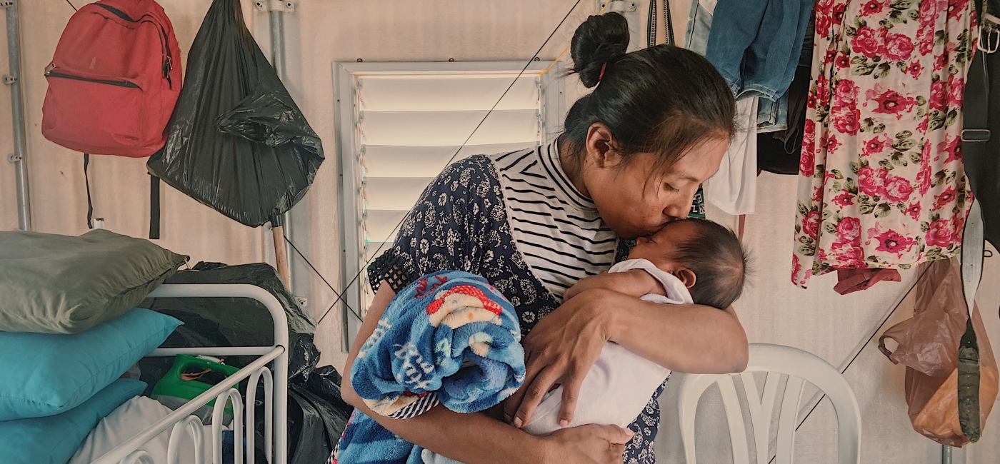

posted by Hannah White on February 28, 2022
When life is upended by the unexpected, people may need assistance to get back on their feet. Millions of Americans experienced this firsthand as COVID-19 caused sweeping job losses. The single largest form of aid was direct cash assistance, primarily in the form of stimulus checks. This form of support, known as cash transfers, have been a tool of NGOs for years.
Putting money directly into the pockets of people in need, cash transfers are a vital form of aid. This has been especially true in developing countries, which have been particularly hard-hit by conflict, the climate crisis and COVID-19. For example, when locusts plundered farms across Somalia, families needed a fast way to replace their lost source of food and income. With emergency support of just $60, families were able to regain stability and plan for their future.
Below are some of the ways that cash transfers are a smart part of humanitarian assistance.
BENEFIT #1 – EMPOWERING PEOPLE IN NEED
Cash transfers enable recipients to make the financial choices best for their families. While providing a family with a bag of grain can be beneficial, it is possible that what they most need are funds to buy medicine or diversify their diet with a greater assortment of vegetables. Cash transfers empower families by giving households the flexibility to make the choices best for them. And, it turns out, a little extra cash can make it easier for people to work and even less likely they will spend money on so-called “temptation goods” like tobacco.
BENEFIT #2 – STRENGTHEN LOCAL MARKETS
When people in need receive cash, they spend that money at their local market. In turn, those vendors use the income to make purchases of their own, or send their kids to school. In this way, cash assistance strengthens the community and multiplies the impact of the funds.
BENEFIT #3 – LESSENS ENVIRONMENTAL IMPACT
Traditional food aid requires a long supply chain: from carbon-intensive practices used to grow and pack food in the United States, to shipping and local distribution. Each of these steps increases the food’s carbon footprint. It can also take months and significantly more money for supplies to reach communities in desperate need. By providing cash transfers directly, people can buy fresh local goods, which is better for the environment.
Cash transfers have empowered people across the globe to find stability in times of upheaval. For example, Action Against Hunger used cash transfers in Guatemala to provide rapid relief for people following Hurricane Eta in 2020. In Uganda, cash transfers are giving communities the skills and confidence to better manage their money in the long-term.
In considering where to donate, look for NGOs that include cash transfers as part of their mix of programs. That approach can help your donation go further through a proven, effective tool to help families in need.